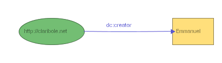
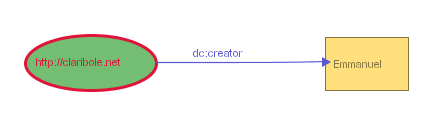
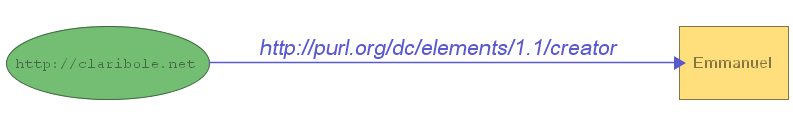
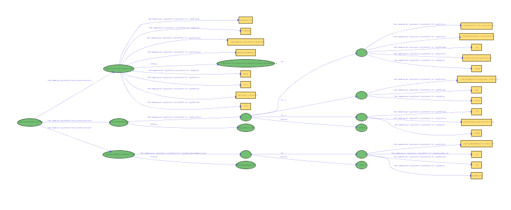
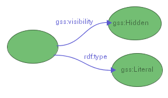
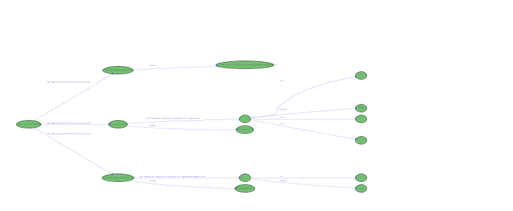
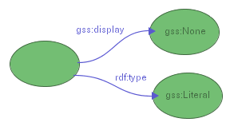
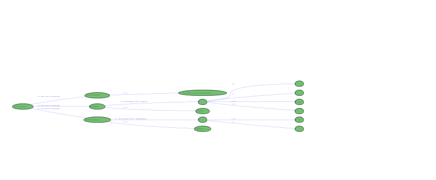

Graph Stylesheets are a way to associate style to node-edge representations of RDF models, but also to hide part of the graph and to offer alternative layouts for some elements. This means that based on some selectors (detailed later), it is possible to assign color, stroke width or font style to specific nodes and edges in the graph. It is also possible to hide selected nodes and edges, or to lay them out (along with the node at the other end of the edge) in a table form in order to group them in a region of the visualized space.
Graph Stylesheets are themselves expressed in RDF and define their own vocabulary in a namespace with the following URI:
which will be bound to prefix gss: in the remainder of this document.
A graph stylesheet is made of a set of rules which select resources, properties and literals in an RDF model and assign styling attributes to the graphical entities that represent them in IsaViz (nodes and edges of the node-arc diagram). The left-hand side of a rule is called the selector, while the right-hand style is called the styling instruction set.
There are three types of selectors : resource selectors, literal selectors, and property selectors, which each accept different properties describing the constraints that the stylesheet designer wants to express on the entities to select. The selector itself is represented by a b-node (or anonymous node), and must declare a specific rdf:type property.
A resource selector must declare an rdf:type property whose value is class gss:Resource. The following properties can be attached to the selector:
gss:subjectOfStatement and gss:objectOfStatement are described in detail later.
Figure 1 shows an example of a selector for resource http://claribole.net
Figure 1: Selecting resource http://claribole.net (SVG version)
Figure 2 shows an example of a selector for resources whose URI belongs to the Dublin Core namespace.
Figure 2: Selecting resources in the Dublin Core namespace (SVG version)
All these properties can be combined to create complex selectors. The set of properties associated with a given selector is interpreted as a conjunction of constraints on the resource(s) to select. As a consequence, gss:uriEquals and gss:uriStartsWith cannot appear together and can only appear once. They can however be combined with one or more gss:subjectOfStatement and objectOfStatement properties.
Note: a resource selectors which does not express any constraint will select all resources in the model. However, it still needs to declare an rdf:type property whose value is class gss:Resource.
A property selector must declare an rdf:type property whose value is class gss:Property. The following properties can be attached to the selector:
Figure 3 shows an example of a selector for rdf:type properties.
Figure 3: Selecting rdf:type properties (SVG version)
Figure 4 shows an example of a selector for properties in the RDFS namespace
Figure 4: Selecting properties in the RDFS namespace (SVG version)
As for resource selectors, gss:uriEquals and gss:uriStartsWith cannot appear together and can only appear once in property selectors. A property being the predicate of exactly one statement, which has exactly one subject and one object, there is at most one gss:predicateOfStatement property attached to a property selector. Again, the set of properties associated with a given selector is interpreted as a conjunction of constraints on the property(-ies) to select.
A literal selector must declare an rdf:type property whose value is class gss:Literal. The following properties can be attached to the selector:
Figure 5 shows an example of a selector for literals typed as xsd:int and whose value is equal to 10.
Figure 5: Selecting integer literals equal to 10 (SVG version)
Figure 6 shows an example of a selector for all plain literals.

Figure 6: Selecting all plain literals (SVG version)
gss:value and gss:datatype can only appear once in a given selector. A literal being the object of exactly one statement, at most one gss:objectOfStatement property can be attached to a literal selector. The set of properties associated with a given selector is interpreted as a conjunction of constraints on the literal(s) to select.
As mentioned earlier, it is possible to express complex contraints on the type and value of nodes and properties attached to the entity(-ies) that should be selected. This is achieved through the use of gss:subjectOfStatement, gss:objectOfStatement and gss:predicateOfStatement.
gss:subjectOfStatement can be used only to select resources. It is used to specify constraints on the predicate and the object of a statement whose subject is the resource to select. gss:subjectOfStatement points to a b-node representing the statement itself. It is then possible to attach the following properties to this node:
Figure 7-a shows an example of a selector for resources declaring an rdf:type property with value rss:channel.
Figure 7-a: Selecting all resources typed as rss:channel (SVG version)
Note that the above example selects only resources which have a property rdf:type whose value is rss:channel. They do not select resources which have a property rdf:type whose value is not rss:channel but which also have another property (different from rdf:type) whose value is rss:channel. In order to specify such a constraint, two different gss:subjectOfStatement properties need to be specified for the selector, as shown in Figure 7-b. This selector would select resources declaring an rdf:type property with value rss:channel, but also, for instance, resources that declare an rdf:type property with value rss:item and another property rdfs:label with value rss:channel, as it meets the constraints as expressed in example 7-b.
Figure 7-b: Selecting all resources declaring an rdf:type property and having a property whose value is rss:channel (SVG version)
Figure 8 shows a more complex example. It selects all resources in the http://www.w3.org domain, which declare a dc:title property (title value is not constrained) and a dc:creator property whose value must be "Emmanuel Pietriga".
Figure 8: Selecting all plain literals (SVG version)
gss:objectOfStatement works similarly to gss:subjectOfStatement. It can be used to select resources or literals, by specifying constraints on the predicate and the subject of a statement whose object is the resource or literal to select. gss:objectOfStatement points to a b-node representing the statement itself. It is then possible to attach the following properties to this node:
Figure 9 gives an example of selector for literals which must be the object of a p3p:imageWidth statement whose subject must be a resource with a URI equal to http://claribole.net/2003/03/centralpark-4.jpg and belonging to class p3p:Image (the subject must declare a property rdf:type whose value is class p3p:Image)
Figure 9: Selecting the literal object of a p3p:imageWidth statement whose subject is a p3p:Image with a specific URI (SVG version)
Figure 10 refines the previous selector by constraining the value and datatype of the literal to be selected.
Figure 10: Adding constraints on the literal's value and datatype (SVG version)
gss:predicateOfStatement can be used to select properties and uses the same constructs as defined earlier. It is used to specify constraints on the subject and the object of a statement whose predicate is the property to select. gss:predicateOfStatement points to a b-node representing the statement itself. It is then possible to attach the following properties to this node:
Figure 11 gives a simple example selecting all properties describing resource http://claribole.net
Figure 11: Selecting all properties describing resource http://claribole.net (SVG version)
Figure 12 builds upon the previous example and adds a constraint on the class of the statement's object.
Figure 12: Selecting all properties describing resource http://claribole.net with a value of class p3p:Image (SVG version)
We have seen in the previous section how to select resources, properties and literals. We are now going to see how to associate styling attributes to selectors in order to have full styling rules.
First, it is important to note that styling properties are not directly associated with selector nodes. Instead, one or more styling properties can be attached to a style node, which is itself pointed at by one or more selectors using the gss:style property, thus enabling the reuse of already defined styles. As shown in figure 13, a selector can also make use of more than one style node.
Figure 13: Sharing styling instructions between selectors (SVG version)
Since they are visually represented by different kinds of graphical objects (basically nodes and edges), different styling properties can be associated with resources, literals and properties. We are first going to take a look at the core styling properties which can be applied to all of them.
The core styling properties can be applied to resources, literals and properties. Most of them are inspired from CSS and accept the same values as defined by the CSS 2 Specification. In all the following examples, we use very simple selectors for the sake of clarity ; any selector, no matter its complexity, can of course be associated with style nodes.
The stroke color corresponds to the node's border color for resources and literals and to the edge's color for properties. As figure 14 shows, it is specified using the gss:stroke property and can take any CSS2 color value such as:
Figure 14: Stylesheet for changing the stroke color width of all resource nodes (SVG version)
The stroke width corresponds to the node's border width for resources and literals and to the edge's thickness for properties. As figure 14 shows, it is specified using the gss:stroke-width property and takes any positive numerical value. The only length unit supported for now is pixels ('px', which can be ommited). Figure 15a shows the standard representation of a simple RDF model in IsaViz ; figure 15b shows the same model, this time applying the stylesheet defined in figure 14.
|  |  |
Figure 15a: Model without stylesheet (SVG version) |
Figure 15b: Model with stylesheet (SVG version) |
As shown in figure 16, it is possible to change several properties of the font used to render the text labels associated with the nodes and edges. Four properties are supported and accept the same values as defined by the CSS 2 Specification:
Figure 16: Stylesheet for changing the font properties of resources, literals and properties (SVG version)
Figure 17a shows a model with the default font used for all labels. Figure 17b shows the same model displayed using the stylesheet from figure 16.
Figure 17a: Model without stylesheet (SVG version)
Figure 17b: Model with stylesheet (SVG version)
In addition to the core styling properties, GSS features two other properties that can only be applied to the nodes of the graphs (i.e. to resources and literals).
As shown in figure 18, the fill color corresponds to the node's interior color. It is specified using the gss:fill property and, as gss:stroke, can take any CSS2 color value. Note that it is possible to assign a style defining one or both of these properties (among others) to property selectors. They will simply be silently ignored in that case.
Figure 18: Stylesheet defining a stroke color and a fill color for resources in the http://www.w3.org/ domain (SVG version)
Figure 19 gives an example of model rendered using the stylesheet from figure 18.
Figure 19: Application of the stylesheet from figure 18 to a model (SVG version)
It is possible to change the shape of resource and literal nodes using the gss:shape property. The user can choose to use predefined shapes, by setting one of the following resources as the value of this property:
or one of the following, knowing that in each case the node's width is not adjusted to fit the entire label, but remains approximately equal to the node's height:
Figure 20a shows a stylesheet assigning a triangular shape to all literals typed as integers. Figure 20b gives an example of a model rendered using this stylesheet.
Figure 20a: Assigning a triangular shape to all literals typed as integers (SVG version)
Figure 20b: Literals typed as integers represented as triangles (SVG version)
Aside from predefined shapes, it is also possible to define custom shapes, following the Glyph model described in [1], [2] and [3]. Basically, as shown in figures 21 and 22, this model represents a shape as a list of normalized float numbers (between 0.0 and 1.0) which each represent the distance from the center of the shape's bounding circle to a vertex (0.0 means that the vertex coincides with the center of the bounding circle, 1.0 means that the vertex is on the bounding circle). The angle between each vertex is constant and equal to 2*Pi/N where N represents the number of vertices. In GSS, a shape represented using this model is encoded in a literal value which consists of a list of normalized floats between square brackets plus an optional float number representing the orientation of the shape (considered equal to 0 is not specified). The shape's value in figure 21 corresponds to the shape in figure 22. As we will see later, IsaViz provides a graphical front end for specifying Graphical Stylesheets, so that users do not have to author GSS directly in RDF (although this is still possible). This front end makes use of the ZVTM Glyph Factory widget (provided by the ZVTM graphical toolkit upon which IsaViz relies) to allow the user to specify custom shapes by direct manipulation. Figure 23 gives an example of model rendered using the stylesheet from figure 21.
Figure 21: Assigning a custom shape to all literals typed as integers (SVG version)
Figure 22: ZVTM Glyph Factory
Figure 23: Custom shape for literals typed as integers (SVG version)
Note: as for gss:Circle and other shapes, the width of custom shapes is not adjusted to fit the entire label. If the label is too wide to fit inside the shape, it crosses the shape' boundary. However, the shape and the label remained centered w.r.t each other. This means that custom shapes (and shapes that follow this rule) are best suited to small literal values. When displaying long URIs or long literal values, it is better to use ellipses or rectangles.
Aside from styling instructions, GSS also features properties to hide selected resources, properties and literals. Visibility properties are attached directly to selectors, not to style nodes. There are two visibility properties, inspired by CSS:
Although everything is visible by default, gss:Visibility=visible is interesting if you want to show something that is being hidden by a stylesheet applied prior to the one you are defining (we will see in section 5 that, as CSS stylesheets, GSS stylesheets can be cascaded).
gss:Visibility=gss:Hidden and gss:Display=gss:None both hide the entities they select. The difference between the two is that gss:Visibility=gss:Hidden hides entities after the layout process has occured, whereas gss:Display=gss:None hides them before computing the graph layout. This means that in the first case the layout is not impacted by the fact that some entities are hidden (hidden entities occupy space, even though they are not visible), whereas in the second case the layout is changed (hidden entities are not taken into account in the layout computation, resulting in a more compact graph). The following figures illustrate this difference.
| Initial Representation (nothing hidden) |  (SVG version) |
|  (SVG version) visibility=hidden |
 (SVG version) |
|  (SVG version) display=none |
 (SVG version) |
@@section not yet written
As CSS, GSS supports the cascading of stylesheets. In case of conflict between two rules belonging to different stylesheets, the rule in the stylesheet applied last prevails. In case of conflict between two rules belonging to the same stylesheet, the styling engine computes a weight for the conflicting rules and selects the one with the heaviest weight (the more a rule is specific, the higher its weight). If the weights are the same, there is no guarantee on which rule will be selected.
GSS Stylesheets in IsaViz are managed through the Stylesheets tab of the Definitions window shown in figure 23. In this window, the user can load any number of stylesheets located on their computer or available publicly on the Web. The sequence of application of these stylesheets is oriented downward. This means that in the example of figure 23, coloring.gss will be applied first, then datehiding.gss and finally dateshowing.gss. As stated earlier, in case of conflict between rules belonging to different stylesheets, the rule in the stylesheet applied last prevails.
Figure 24: Managing Stylesheets in IsaViz
The position of stylesheets into the sequence can be changed by selecting the stylesheet of interest and then using the two arrows located at the far left of the panel. Stylesheets can also be removed from the list. For now, stylesheets have to be created by directly editing the RDF model representing the stylesheet using the GSS vocabulary. However, a full graphical front-end is under development, which will allow users to specify styling rules by direct manipulation of visual entities, without having to write a single line of RDF. This front-end will be available as a standalone application and through IsaViz by clicking on the Edit Selected Stylesheet button.
Stylesheets are automatically applied to models imported through any command of the File/Import menu. It is also possible to apply the sequence of stylesheets manually using the Apply Stylesheets button.
[1] Jean-Yves Vion-Dury and Francois Pacull, A structured Interactive Workspace for a Visual Configuration Language, Proceedings of Visual Languages '97, pp132-139, 1997, Capri, Italy
[2] Jean-Yves Vion-Dury, Un générateur de composants pour le traitement des langages visuels et textuels, Université Joseph Fourier - Grenoble 1 (PhD thesis), 1999, Domaine Universitaire, Saint Martin d'Hères, France
[3] E. Pietriga, Environnements et langages de programmation visuels pour le traitement de documents structurés, Institut National Polytechnique de Grenoble (PhD thesis), Novembre 2002, Grenoble, France
Emmanuel Pietriga |
{kind=link}
{kind=link}
{kind=link}
{kind=link}
{kind=link}
{kind=link}
{kind=link}
{kind=link}
{kind=link}
{kind=link}
{kind=link}
{kind=link}
{kind=link}
{kind=link}
{kind=link}
{kind=link}
{kind=link}
{kind=link}
{kind=link}
{kind=link}
{kind=link}
{kind=link}
{kind=link}
{kind=link}
{kind=link}
{kind=link}
{kind=link}
{kind=link}
{kind=link}
{kind=link}